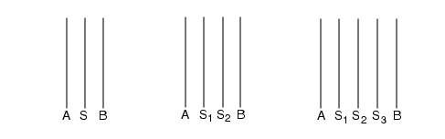

External
Layer operation
Measures the separation between the exterior sides of edges from one or two input layers. Measured edge pairs which satisfy the given constraint are output. Intersecting edge pairs are never measured, by default.
Usage
Single-Layer Syntax:
EXTernal layer1 constraint [metric] [polygon_filter] [edge_shielding_filter] [connectivity_filter] [orientation_filter] [projection_filter] [angled_filter] [corner_filter] [intersection_filter] [reversal] [EXCLUDE FALSE] [region_output]
Two-Layer Syntax:
EXTernal layer1 layer2 constraint [metric] [polygon_filter] [polygon_containment] [edge_shielding_filter] [connectivity_filter] [orientation_filter] [projection_filter] [angled_filter] [corner_filter] [intersection_filter] [reversal] [EXCLUDE FALSE] [region_output]
Argument Syntax:
metric: [OPPOSITE | OPPOSITE EXTENDED value | SQUARE | OPPOSITE SYMMETRIC | OPPOSITE FSYMMETRIC | OPPOSITE EXTENDED SYMMETRIC value | OPPOSITE EXTENDED FSYMMETRIC value | OPPOSITE1 | OPPOSITE2 | OPPOSITE EXTENDED1 value | OPPOSITE EXTENDED2 value | SQUARE ORTHOGONAL]
polygon_filter: [NOTCH | SPACE]
polygon_containment: [MEASURE ALL]
edge_shielding_filter: [EXCLUDE SHIELDED [0 | 1 | 2 | 3 | 4] [BY LAYER layer] [COUNT {0 | 1 | 2}]]
connectivity_filter: [CONNECTED | NOT CONNECTED]
orientation_filter: [{[ACUTE ALSO | NOT ACUTE] [PARAllel ALSO | NOT PARAllel] [NOT PERPendicular | PERPendicular ALSO] [NOT OBTUSE | OBTUSE ALSO]} | ACUTE ONLY | PARAllel ONLY | PERPendicular ONLY | OBTUSE ONLY]
projection_filter: [PROJecting [projection_length] | NOT PROJecting]
angled_filter: [ANGLED [angle_constraint]]
corner_filter: [CORNER TO CORNER [corner_constraint] | CORNER TO EDGE | CORNER | NOT CORNER]
intersection_filter: [{[ABUT [abut_constraint]] [OVERLAP] [SINGULAR]} [INTERSECTING ONLY]]
reversal: [INSIDE ALSO]
EXCLUDE FALSE: [EXCLUDE FALSE]
region_output: [REGION | REGION EXTENTS | REGION CENTERLINE [value]]
Description
For the single-layer syntax, measures the separations between exterior-facing edges on layer1. This includes exterior-facing edges that occur on the same polygon, such as with notches. For the two-layer syntax, measures the separations between the exterior-facing sides of layer1 edges and the exterior-facing sides of layer2 edges.
There are multiple optional keyword sets that control the behavior of the EXTernal operation for specialized applications. EXTernal is principally used for spacing checks as shown here:
The rule checks shown in the preceding figure measure the separation between the layer1 edges (single-layer syntax) and layer1 and layer2 edges (two-layer syntax). The line segments with arrows indicate where the measurements occur. Notice the order of the layers is unimportant in the two-layer syntax. By default, edge segments from both layers that meet the measurement constraint are output for the two-layer syntax.
Note that in Figure 1, for a sufficiently large value of m, the separation of edges from polygon A to polygon B is also measured. The intervening polygon between A and B does not prevent this measurement. However, the separation of edges from polygons C and D is not measured by default because C is contained inside layer2.
The default EXTernal operation uses the ACUTE ALSO, PARAllel ALSO, NOT PERPendicular, and NOT OBTUSE keywords with the Euclidean measurement metric (which has no keyword).
The following figure shows the most common type of EXTernal rule check. It uses the ABUT and SINGULAR secondary keywords, which are discussed later in this section. ABUT checks intersecting edges and SINGULAR checks single-point interactions. EXTernal does not check these situations by default.
The tool outputs measured edge pairs satisfying the given constraint. Intersecting edge pairs and points of singularity are not measured by default. The EXTernal operation is polygon-directed if you use the REGION keyword, edge-directed if you enclose a layer in the [ ] or ( ) operator, and error-directed by default. Error-directed output cannot be used as input for other operations, except DFM Analyze, DFM Expand Edge, DFM Property, DFM RDB, DFM Shift, and DFM Shift Edge.
If EXTernal is used to generate derived polygon layers (as opposed to edge layers), it is recommended to use the OPPOSITE REGION keyword set, like this:
x = EXT lay1 lay2 < 0.04 ABUT < 90 OPPOSITE REGIONSee “region_output” for more details about deriving polygon layers with EXTernal.
Many fundamental concepts and details of dimensional check operations may be found in the section “Dimensional Check Operations” in the Calibre Verification User’s Manual. You may want to have this reference open while reading about External.
Related operations include Enclosure, Internal, TDDRC, DFM Measure, With Neighbor, and DRC Tolerance Factor.
Arguments
- layer1
An original layer or layer set, or a derived polygon or edge layer.
Positive and negative edge data may be used to form derived edge layers. To output only the edges from layer1 that meet the constraint, called positive edge data, enclose layer1 in brackets [ ] (see “Example 1”). To output only the edges from layer1 that do not meet the constraint, called negative edge data, enclose layer1 in parentheses ( ). No more than one set of brackets or parentheses may appear in a given operation. Refer to “Edge-Directed Output” in the Calibre Verification User’s Manual for additional details.
- layer2
An original layer or layer set, or a derived polygon or edge layer.
Positive and negative edge data may be used to form derived edge layers. To output only the edges from layer2 that meet the constraint, called positive edge data, enclose layer2 in brackets [ ] (see “Example 1”). To output only the edges from layer2 that do not meet the constraint, called negative edge data, enclose layer2 in parentheses ( ). No more than one set of brackets or parentheses may appear in a given operation. Refer to “Edge-Directed Output” in the Calibre Verification User’s Manual for additional details.
- constraint
One of the standard constraints, except for > a, >= a, and != a. Specifies the checking distance, which must have an upper bound. The constraint must contain non-negative real numbers and is interpreted in user units. The standard constraints are listed in the “Constraint Notation” column of Table 1 in the “Constraints” topic.
Note:EXTernal operations written to test a greater than or equal zero (>= 0) condition within an interval constraint (as in >= 0 <= 4), do not return a touching or coincident (= 0) condition. The ABUT secondary keyword should be used to check = 0 conditions.
Using constraints that are very large in comparison to the typical feature size of a layer, and when the layer is rather dense, can result in poor performance. If your performance for an EXTernal operation is poor, check to see if the constraint values are large in comparison to the expected feature sizes of the input layers. If so, attempt to rewrite your rules to reduce the layer data presented to the EXTernal operation. See “Efficient Width and Spacing Checks” in the Calibre Verification User’s Manual.
- metric
Secondary keyword set that instructs dimensional check operations to use a specified edge measurement metric when measuring the separation between edges. By default, the measurement metric is Euclidean. You do not need to specify any keyword to get a Euclidean measurement.
For detailed information about all of these metrics, refer to the “Metrics” section of the Calibre Verification User’s Manual.
There are three basic metrics in addition to the default.
OPPOSITE — Specifies perpendicular extension of the measurement region from the edge, but not along the edge, is equal to your constraint. It converts the “<” constraint to “<=” when measuring intersecting edges. This causes output when intersecting edges abut at 90-degree angles. Refer to“intersection_filter” for more information about edge intersection.
OPPOSITE EXTENDED value — Specifies to use the OPPOSITE metric with an extension of the measurement region along the edge. The value is an extension distance in user units and is measured along the edge direction; it must be a positive number.
SQUARE — Specifies the extension of the measurement region along the edge and away from the edge is equal to your constraint.
The examples in the following figure show the four most commonly‑used measurement regions in red. They show only the measurement regions from ipoly to diff. There are also measurement regions that would be constructed from diff to ipoly.
Figure 3. Measurement RegionsThe following highly specialized metrics are used primarily for optical process correction applications.
OPPOSITE SYMMETRIC — Specialized metric based upon the OPPOSITE metric. Used for adjusting edge output for non-orthogonal edges.
OPPOSITE FSYMMETRIC — Specialized metric based upon the OPPOSITE SYMMETRIC metric. Uses a special fill-in algorithm that outputs single edges, where disjoint edges might otherwise be output.
OPPOSITE EXTENDED SYMMETRIC value — Specialized metric based upon the OPPOSITE EXTENDED metric. Used for adjusting edge output for non-orthogonal edges.
OPPOSITE EXTENDED FSYMMETRIC value — Specialized metric based upon the OPPOSITE EXTENDED SYMMETRIC metric. Uses a special fill-in algorithm that outputs single edges, where disjoint edges might otherwise be output.
OPPOSITE1 — Unidirectional metric based upon the OPPOSITE metric. Similar to OPPOSITE SYMMETRIC but measures edges in one direction from the first input layer to the second input layer.
OPPOSITE2 — Unidirectional metric based upon the OPPOSITE metric. Similar to OPPOSITE SYMMETRIC but measures edges in one direction from the second input layer to the first input layer.
OPPOSITE EXTENDED1 value — Unidirectional metric based upon the OPPOSITE EXTENDED metric. Similar to OPPOSITE EXTENDED SYMMETRIC but measures edges in one direction from the first input layer to the second input layer.
OPPOSITE EXTENDED2 value — Unidirectional metric based upon the OPPOSITE EXTENDED metric. Similar to OPPOSITE EXTENDED SYMMETRIC but measures edges in one direction from the second input layer to the first input layer.
SQUARE ORTHOGONAL — Metric used to simulate mask misalignment in the x- and y-directions.
- polygon_filter
The secondary keywords in this set instruct the single-layer EXTernal operation to measure the separation between the outsides of edges based upon polygon membership.
NOTCH — Measures the separation between the exterior-facing edges only from the same polygon.
SPACE — Measures the separation between the exterior-facing edges only from different polygons.
If you do not specify either NOTCH or SPACE, then both conditions are measured. The following figure shows examples.
Figure 4. NOTCH and SPACENOTCH and SPACE are usually not valid in two-layer dimensional check operations unless both layers have the same layer of origin, as shown here:
Rule_85B { @ Metal to wide metal spacing must be 4 microns. DO NOT check @ notches. Wide metal is any metal wider than 5 microns. x = SIZE metal BY -2.5 y = SIZE x BY 2.5 // Wide metal (typical technique). // Layer z is all edges from the original metal layer which // are on wide metal. Because z and metal have the same layer // of origin (metal), we can stipulate to measure spacing. z = metal COINCIDENT EDGE y // Metal edges on wide metal. EXT z metal < 4 SPACE // Check spacing only (no notch). }Any input layer to an EXTernal operation with NOTCH or SPACE having, as its layer of origin, an OR Edge operation or Offgrid operation with EDGE specified is not allowed and generates a compiler error (see the “Layer of Origin” section in the Calibre Verification User’s Manual).
For hierarchical Calibre applications, dimensional check operations with NOTCH and SPACE filters are slower than the identical operations without them; they should be avoided unless needed. For example, it is not necessary to check contact spacing with the SPACE filter if contacts are rectangles by design rule. There are no such considerations in flat applications.
- polygon_containment
This secondary keyword instructs two-layer dimensional check operations to alter the polygon containment criteria when measuring the separation between edges. For more about this topic, refer to the “Polygon Containment Criteria” section of the Calibre Verification User’s Manual.
MEASURE ALL — Specifies to ignore the polygon containment criteria. This allows External to “see through” polygons that ordinarily it would not. The following figure shows an example.
Figure 5. MEASURE ALL- edge_shielding_filter
Secondary keyword set used to suppress the edge measurement process to various levels due to the presence of shielding edges. A shielding edge is an edge S, which completely or partially blocks the line-of-sight between edges A and B. This process is described in detail in the “Edge Shielding” section in the Calibre Verification User’s Manual. The syntax is as follows:
EXCLUDE SHIELDED [level] [BY LAYER layer] [COUNT value]
level — Specifies the amount of effort the tool expends to identify a shielding edge. The level is an integer from 0 to 4, with 4 being used if level is omitted. Specifying 0 indicates no effort is expended to do this, with increasing levels of effort through level 4. Level 4 provides maximum shielding effect, and also requires the greatest amount of processing time. If EXCLUDE SHIELDED is not specified, level 1 is used. Level 0 is used if MEASURE ALL is specified alone. If EXCLUDE SHIELDED is used with MEASURE ALL, the latter keyword is ignored. When specifying the COUNT keyword pair, you must specify a level of 3 or 4.
BY LAYER layer — By default, in a two-input-layer DRC operation the shielding edge may originate from either of the input layers. However, you can use the optional BY LAYER keyword pair to specify one of the input layers to the operation. This applies only to levels 3 and 4, and mandates that the shielding edge must originate from the specified input layer.
COUNT value — By default, the effect of shielding is independent of the actual number of edges. For example, with EXCLUDE SHIELDED levels 3 or 4, edges A and B are shielded the same in all three configurations shown here:
However, you can use the optional COUNT keyword pair to specify that the number of shielding edges must be greater than the value for shielding to occur. This applies only to levels 3 and 4. Valid values for COUNT include:
0 — Specifies all configurations are shielded. (default)
1 — Specifies the left-most configuration is not shielded.
2 — Specifies the right-most configuration is shielded.
- connectivity_filter
Secondary keyword set that instructs dimensional check operations to measure the separation between edges based upon their connectivity. Dimensional check operations ignore connectivity if you do not specify the secondary keywords in this set. Possible choices are:
CONNECTED — Specifies to measure only edges from polygons that belong to the same net.
NOT CONNECTED — Specifies to measure only edges from polygons that do not belong to the same net.
To use these filters, the input layers must possess valid connectivity. In the following figure, output occurs based upon connectivity information.
Figure 6. Connectivity-Based ChecksFor related information, see “Node-Preserving Operations” in the Calibre Verification User’s Manual.
- orientation_filter
Secondary keyword set that instructs the dimensional check operations to measure the separation between edges based upon their appropriate angle or edge orientation. See the “Appropriateness Criteria” section of the Calibre Verification User’s Manual.
Each statement can include one choice from each of these four subsets: acute_filter, parallel_filter, perpendicular_filter, and obtuse_filter. However, the secondary keywords having ONLY in them cannot be specified with any other secondary keywords from the orientation_filter set.
The default parameters in this keyword set (PARAllel ALSO, ACUTE ALSO, NOT PERPendicular, NOT OBTUSE) instruct dimensional check operations to measure the separation between the corresponding sides of edges that face each other and that have an appropriate angle of less than 90 degrees.
The following figure shows the edge orientations that are checked by default using the two-layer EXTernal operation for an appropriate value m. The single-layer form is identical in its behavior. No other orientations are checked unless you select other filters. Note that intersecting (or abutting) edges as shown by angle B are not checked by default.
Figure 7. Default Edge Orientations Checked by ExternalThe orientation_filter subsets are defined as follows:
acute_filter
Refer to the edge orientations in Figure 8.
ACUTE ALSO — Specifies to measure edges with an appropriate angle a, such that 0 < a < 90 degrees. This is the default behavior if you do not specify a choice from this subset in the operation. ACUTE ALSO checks configurations 1 through 3 in the figure with edge orientations (this assumes none of the other default settings are changed).
ACUTE ONLY — Specifies to measure only edges with an appropriate angle a, such that 0 < a < 90 degrees. You cannot use this keyword and a keyword from the other orientation_filter subsets in the same EXTernal operation. ACUTE ONLY checks configuration 1 in the figure with edge orientations.
NOT ACUTE — Specifies not to measure edges with an appropriate angle a, such that 0 < a < 90 degrees. NOT ACUTE checks configurations 2 and 3 in the figure with edge orientations.
Note:Orientations 4 and 5 could be checked if the appropriate filters are set (for example, PERPENDICULAR ALSO and OBTUSE ALSO).
Figure 8. Edge Orientationsparallel_filter
Refer to the edge orientations in Figure 8.
PARAllel ALSO — Specifies to measure parallel edges in addition to non-parallel edges. This is the default behavior if you do not specify a choice from this subset in the operation. PARALLEL ALSO checks configurations 1 through 3 in the figure with edge orientations (this assumes none of the other default settings are changed).
PARAllel ONLY — Specifies to measure only parallel edges. You cannot use this keyword and a keyword from the other orientation_filter subsets in the same EXTernal operation. PARALLEL ONLY checks configurations 2 and 3 in the figure with edge orientations.
NOT PARAllel — Specifies not to measure parallel edges. NOT PARALLEL checks configuration 1 in the figure with edge orientations.
Note:Orientations 4 and 5 could be checked if the appropriate filters are set (for example, PERPENDICULAR ALSO and OBTUSE ALSO).
perpendicular_filter
Refer to the edge orientations in Figure 8.
NOT PERPendicular — Specifies not to measure perpendicular edges. This is the default behavior if you do not specify a choice from this subset in the operation. NOT PERPENDICULAR checks configurations 1 through 3 in the figure with edge orientations (this assumes none of the other default settings are changed).
PERPendicular ONLY — Specifies to measure only perpendicular edges. You cannot use this keyword and a keyword from the other orientation_filter subsets in the same EXTernal operation. PERPENDICULAR ONLY checks configuration 4 in the figure with edge orientations.
PERPendicular ALSO — Specifies to measure perpendicular edges in addition to other orientations. PERPENDICULAR ALSO checks configurations 1 through 4 in the figure with edge orientations.
Note:Orientation 5 could be checked if you set OBTUSE ALSO.
obtuse_filter
Refer to the edge orientations in Figure 8.
NOT OBTUSE — Specifies not to measure edges with an appropriate angle a, such that 90 < a < 180 degrees. This is the default behavior if you do not specify a choice from this subset in the operation. NOT OBTUSE checks configurations 1 through 3 in the figure with edge orientations (this assumes none of the other default settings are changed).
OBTUSE ONLY — Specifies to measure only edges with an appropriate angle a, such that 90 < a < 180 degrees. You cannot use this keyword and a keyword from the other orientation_filter subsets in the same dimensional check operation. OBTUSE ONLY checks configuration 5 in the figure with edge orientations.
OBTUSE ALSO — Specifies to measure edges with an appropriate angle a, such that 90 < a < 180 degrees. OBTUSE ALSO checks configurations 1 through 3 and 5 in the figure with edge orientations.
Note:Orientation 4 could be checked if you set PERPENDICULAR ALSO.
- projection_filter
Secondary keyword set that instructs dimensional check operations to measure the separation between edges based upon their mutual edge projection. Note that the projections of edges onto other edges (if any) are not the output, rather the results of the EXTernal operation and associated secondary keywords are output if the specified projection exists. For the definition of edge projection, see the discussion of projection_filter in the ENClosure statement.
PROJecting [projection_length] — Specifies to measure the separation between two edges only when one edge projects onto the other edge. If projection_length is also specified (it takes the form of a constraint) and the length of any projection conforms to the projection_length constraint then the results are output. The option’s default behavior is projection_length set to >= 0.
NOT PROJecting — Specifies to measure the separation between two edges only when neither edge projects onto the other edge.
Hierarchical considerations — For hierarchical applications, projection and projected length may not be accurately determined if the projection occurs at a hierarchical level well outside the design rule distance between the edges. This problem occurs when two non-parallel edges A and B are being measured with PROJECTING or NOT PROJECTING specified, one or both of the edges extends across multiple hierarchical levels, and the actual projecting portions are well outside the design rule distance between the edges. For constrained PROJECTING filters, if you do not specify the PARALLEL ONLY keyword, Calibre issues a warning and sets the PARALLEL ONLY keyword filter. If you have an unconstrained PROJECTING filter and you want hierarchical and flat results to be the same, it is highly recommended that PARALLEL ONLY be specified.
- angled_filter
Secondary keyword set that instructs dimensional check operations to measure edge pairs based on orthogonality with respect to the coordinate system axes. The possible choice is:
ANGLED [angle_constraint] — Specifies to measure the two edges only when the number of non-orthogonal edges in the pair meets the given constraint. The constraint is optional and when omitted, defaults to > 0. See the following figure.
Figure 9. ANGLED
Examples:
EXT poly < 3 ANGLED == 2 // Measure 2 edges only if both are angled. EXT poly < 3 ANGLED < 2 // Measure 2 edges only if one or neither is // angled.- corner_filter
Secondary keyword set that instructs dimensional check operations to measure edge clusters based on corner-to-corner or corner-to-edge orientation.
You cannot specify this filter with an orientation_filter, projection_filter, or angled_filter.
CORNER TO CORNER [corner_constraint] — Specifies to measure the edge clusters only if they are in a corner-to-corner configuration. The constraint is optional. When you specify corner_constraint, the only allowed options are == 45, != 45, and >= 0. The == 45 and != 45 constraints limit the measurement of edges in a corner-to-corner configuration according to the angle that the line segment linking the opposing corners makes with the x-axis. The >= 0 constraint allows projection if the projected length is at most zero.
CORNER TO EDGE — Specifies to measure the edge clusters only if they are in a corner-to-edge configuration (defined later in this section).
CORNER — Specifies to measure the edge clusters only if they are in a corner-to-corner or corner-to-edge configuration.
NOT CORNER — Specifies to measure the edge clusters only if they are not in a corner-to-corner or corner-to-edge configuration.
The corner-to-corner and corner-to-edge filters are defined as follows: For a single-layer dimension check, let A and B be two edges from layer1 to be measured. For a two-layer check, let A be the edge from layer1 and B the edge from layer2. A convex 90-degree corner of a polygon is one where the polygon inside covers 90 degrees around the corner point, and a concave 90-degree corner is one where the polygon inside covers 270 degrees.
The edge clusters are in a CORNER TO CORNER configuration when:
The edges are parallel and do not project onto each other.
Let AP be the point on edge A closest to edge B and let BP be the point on edge B closest to edge A. (These points are guaranteed to be unique due to the parallel and projecting restriction.) Both AP and BP lie at convex 90-degree corners of polygons on their respective layers. See the following figure.
Figure 10. CORNER TO CORNER
The two edges are in a CORNER TO EDGE configuration when the following are true:
The edges are neither parallel nor perpendicular.
Either endpoint of edge A or B is at a convex 90-degree corner and the corner projects onto the other edge (that is, the line bisecting the corner intersects the edge at a unique point and this point can be an endpoint of the edge). See the following figure.
Figure 11. CORNER TO EDGEExamples:
poly_spacing { @ poly spacing =2 with the square metric applied for corner-to-edge @ and corner-to-corner spacings. EXT poly < 2 NOT CORNER //Used to avoid error duplication EXT poly < 2 CORNER SQUARE } poly_spacing { @ poly spacing = 2 with the square metric applied to corner-to-corner @ spacings. Corner-to-edge spacing is 2.5 EXT poly < 2 NOT CORNER //Used to avoid error duplication EXT poly < 2 CORNER TO CORNER SQUARE EXT poly < 2.5 CORNER TO EDGE }- intersection_filter
An optional parameter that measures edge pairs based upon intersection behaviors. The value of intersection_filter takes the following form:
[ABUT [abut_constraint]] [OVERLAP] [SINGULAR]
[intersection_filter INTERSECTING ONLY]
You can specify any combination of the secondary keywords ABUT, OVERLAP, and SINGULAR in one operation:
ABUT[abut_constraint] — Specifies that separation between intersecting edges should also be checked. It is highly recommended that you use ABUT < 90 in your rule file unless you have good reasons not to. Intersecting (abutting) edges are not checked by default. Intersecting edges are measured only if the appropriate angle between them conforms to the optional abut_constraint (interpreted in degrees). With the exception of intersection, the edges must also meet the criteria of the dimensional check operations and any parameters specified from the connectivity_filter or polygon_filter membership sets. Output from the ABUT condition is in addition to any other output the EXTernal operation generates.
The abut_constraint modifier must contain non-negative real numbers less than 180. Single-operator constraints such as < 90 and > 135 are interpreted as >= 0 < 90 and > 135 < 180. The default value is >= 0 < 180.
If the abut_constraint modifier includes zero in its range (for example, < 90, == 0, >= 0 < 45), then any edges A of layer1 and B of layer2, which are coincident outside, are also output (since the angle between the exterior side of A and the interior side of B is zero). There is no measurement involved in this event and polygon containment criteria are not applied.
In a one-layer dimensional check operation, coincident edges do not exist, since Calibre nmDRC applications automatically merge all abutting or overlapping polygons into one polygon. Therefore, the == 0 and the <= 0 constraint cannot be specified with the ABUT parameter in single-layer syntax.
This measurement of intersecting edges ignores orientation_filter, projection_filter, and corner_filter, but does not ignore connectivity_filter, polygon_filter, and angled_filter. See the following figure.
Figure 12. ABUTOVERLAP— Specifies that measurement of the separation between intersecting edges at points where a polygon from one input layer crosses a polygon from the other input layer should also occur. All edges forming the point of overlap are measured as if you specified an unconstrained ABUT parameter (see rule_o in Figure 12). This overrides any specified ABUT parameter, but only at the point of overlap. You cannot use this parameter when either of the input layers is a derived edge layer because overlaps cannot be computed in the absence of polygons.
The precise definition of a point at which overlap is detected is as follows:
Given a two-layer dimensional check operation between layer1 and layer2, let P be any point where more than one edge from layer1 is present and more than one edge from layer2 is present (after edge-breaking, see the “Edge Breaking” section of the Calibre Verification User’s Manual for details). The tool detects an overlap at point P if the following criteria are true:
An edge from layer1 that is outside of or coincident outside with a polygon from layer2 and an edge from layer1 that is inside of or coincident inside with a polygon from layer2.
An edge from layer2 that is outside of or coincident outside with a polygon from layer1 and an edge from layer2 that is inside of or coincident inside with a polygon from layer1.
SINGULAR — Specifies that the separation between the corresponding sides of intersecting edges at points of polygon singularity should also be measured. Singularities are point-to-edge or point-to-point polygon intersections or self-intersections and are often design rule errors. It is highly recommended that you use SINGULAR in your rule file (unless you have good reasons not to) because singularities are not checked by default. Figure 13 shows examples of singularities detected by an EXTernal operation.
When a dimensional check operation detects a point of singularity, all edges forming the point of singularity are measured as if you specified an unconstrained ABUT parameter in the operation. This overrides any specified ABUT parameter but only at the point of singularity.
You cannot use the SINGULAR parameter when either of the input layers is a derived edge layer because singularities cannot be computed in the absence of polygons.
Figure 13. External: Measurement and Output at SingularitiesINTERSECTING ONLY — Specifies to measure only between intersecting edges and to ignore non-intersecting edges. Must be preceded with at least one of the other filters in this set. This filter ignores orientation_filter, angled_filter, projection_filter, and corner_filter.
Remember, ABUT, OVERLAP, and SINGULAR output their results in addition to the typical EXTernal output. INTERSECTING ONLY limits output to only what the intersection_filter keywords produce. Figure 12 and Figure 13 show the types of output to expect from INTERSECTING ONLY. Figure 1 does not because the measured edges do not intersect.
Here are some examples of common configuration of intersection keywords:
// Poly spacing/notch = 2, exterior acute angles not ok, // single-point touching not ok. poly_space { EXT poly < 2 ABUT < 90 SINGULAR } // Contact spacing = 3, rectangular contacts assumed, single-point // touching not ok. cont_space { EXT contact < 3 SINGULAR } // Poly spacing to diffusion = 1, coincident outside edges not ok // single-point touching not ok, acute angle crossing not ok. poly_diff_space { EXT poly diff < 1 ABUT < 90 SINGULAR }// nwell spacing to ndiff = 3, crossing edges not ok, // coincident outside edges not ok, single-point touching not ok. nw_diff_space { EXT nwell ndiff < 3 ABUT == 0 OVERLAP SINGULAR } // nwell spacing to ndiff = 3, crossing edges ok, coincident // outside edges ok, single-point touching not ok, acute // angle crossing not ok. nw_ndiff_space1 { EXT nwell ndiff < 3 ABUT > 0 < 90 SINGULAR } // nwell spacing to ndiff = 3, crossing edges not ok, // coincident outside edges ok, single-point touching not ok // acute angle crossing not ok. nw_ndiff_space2 { EXT nwell ndiff < 3 ABUT > 0 < 90 OVERLAP SINGULAR }- reversal
Secondary keyword that instructs a two-layer EXTernal operation to output edges that are enclosed by either layer1 or layer2 (Figure 14).
INSIDE ALSO — Specifies that edges from layer1 or layer2, which are inside or coincident-inside with the other input layer, are output by the operation. Connectivity parameters are obeyed and this is discussed later in this section.
If layer1 is a derived edge layer, then candidate edges for measurement are restricted to coincident-inside edges from layer2. If layer2 is a derived edge layer, then candidate edges for measurement are restricted to coincident-inside edges from layer1.
Figure 14. INSIDE ALSO OutputThe INSIDE ALSO parameter produces one-edge clusters if the output is directed to an error layer; all other error-directed output from a dimensional check operation consists of two-, three‑, or four-edge clusters (see “Edge Cluster Generation” in the Calibre Verification User’s Manual for details). This behavior is transparent to an edge-directed dimensional check operation and the edge is output according to the layer from which it originated.
Note the INSIDE ALSO parameter generates outputs in the absence of any measurement process by the operation. That is, it is similar to output from an edge-topological operation rather than a dimensional check operation.
The INSIDE ALSO parameter is useful in eliminating time-consuming operations. For example, consider the following design rule:
Contacts and vias must be separated by 3 microns and no stacking or touching is allowed.
Without the INSIDE ALSO parameter, this check requires the following two operations for complete accuracy:
contact_via_space { EXTERNAL contact via < 3 ABUT == 0 SINGULAR // Spacing and touching. AND contact via // Common area (stacking). }By using the INSIDE ALSO parameter, you can eliminate the AND operation:
EXTERNAL contact via < 3 ABUT == 0 SINGULAR INSIDE ALSONotes concerning the INSIDE ALSO parameter:
Because there is no measurement involved in generating output from the INSIDE ALSO parameter, the polygon_containment, metric, and orientation_filter do not apply.
The tool obeys connectivity filters for the EXTernal operation. If you specify NOT CONNECTED, then the INSIDE ALSO parameter does not output an edge if the polygon containing it is on the same electrical node. If you specify CONNECTED, then the INSIDE ALSO parameter does not output an edge if the polygon containing it is on a different electrical node. This is helpful in rule checks used for detecting soft connections.
In the previous examples, spurious errors can be produced. Such errors can be combined by switching to a polygon-directed form (see “region_output”).
It is not necessary to use the OVERLAP parameter with INSIDE ALSO if you intend to catch shared or non-shared areas. This is likely to result in spurious errors.
The following is an example where INSIDE ALSO is used with a connectivity_filter. Consider the design rule, followed by the rule check statement:
All n-taps inside nwells must be on the same net as their enclosing nwell.
ntap_check { EXTERNAL ntap nwell == 0 INSIDE ALSO NOT CONNECTED }The rule check assumes all n-taps are inside an nwell to begin with.
- EXCLUDE FALSE
A secondary keyword used to eliminate rare false errors due to the absence of endpoint blocking edges at the correct hierarchical level when two edges are measured. This is often referred to as a false notch. This only applies to hierarchical runs. This option can have a substantial runtime penalty.
See “False Measurement Reduction” in the Calibre Verification User’s Manual for more information.
- region_output
An optional keyword that generates a derived polygon layer instead of a derived error layer. For detailed information on this subject, see “Polygon-Directed Output” in the Calibre Verification User’s Manual.
The value of region_output takes the following form:
REGION [EXTENTS | CENTERLINE [value]]
REGION — Constructs polygon output by creating segments connecting the endpoints of selected edges; the composite of the segments and the selected edges is a polygonal region.
Using REGION with OPPOSITE is usually the best choice for deriving polygon layers.
If you are deriving polygon layers, using REGION can adversely affect performance and accuracy. The final placement of such edges is the result of merging and numeric rounding. This can result in the placement of skew edge vertices that differ up to 1 dbu from the layout geometry.
REGION EXTENTS — Constructs derived polygon data as for REGION, but the output is the rectangular extents of the polygons output by REGION, rather than the polygons themselves. The tool forms the extents prior to the merging of the regions.
REGION CENTERLINE [value] — Constructs polygonal shapes as for REGION and then outputs the centerlines of the polygonal regions. These centerlines are formed prior to the merging of the regions. The centerlines are along the direction of the edges whose measurement forms the region; they have a default width of eight database units. The optional parameter value allows you to specify the centerline width. The value must be a floating-point number greater than or equal to two database units.
For two, parallel, horizontal edges, the y-coordinate of the centerline segment is always closer to the bottom edge if any snapping occurs. The formula for the y‑coordinate of the centerline is:
y1 + ( ( y2 - y1 ) / 2 )
For vertical edges, a similar change keeps the x-coordinate of the line segment closer to the left edge.
The following figure shows examples.
Figure 15. REGION Examples
Examples
Example 1
This example illustrates how to output only the edges from layer poly that meet the constraint by enclosing the layer in brackets [ ].
// Poly adjacent to diff < 0.1 um may not be > 5 um in length
diff_poly_ext {
x = ext [poly] diff < 0.1 ABUT < 90 SINGULAR
// derived edge layer having edges from poly
length x > 5 //error output to results database
}Example 2
If the measurement constraint in an External operation is sufficiently large, the operation can “see through” polygons. Consider the following two sets of operations:
The operation on the left takes both the measurements labeled 8 and 14, and selects the appropriate edges, because the constraint interval is large enough for this to occur. For dense line biasing, and similar layer derivations, this is an undesirable behavior.
The operation set on the right overcomes this problem. The Size operation causes the original polygons on layer X that are 4 units apart to be merged. The derived layer Y is then presented to the same External operation as before and only the desired measurement is taken.
Example 3
The PROJ == 0 setting can be used to check for convex corners that do not project onto each other. This is shown in the following diagram.
However, PROJ == 0 is not limited to simply checking convex corners. It checks any edge pairs that do not project onto each other, and that satisfy the other criteria of the EXT check.
For additional examples see “Spacing Checks” and “Contact Checks”.